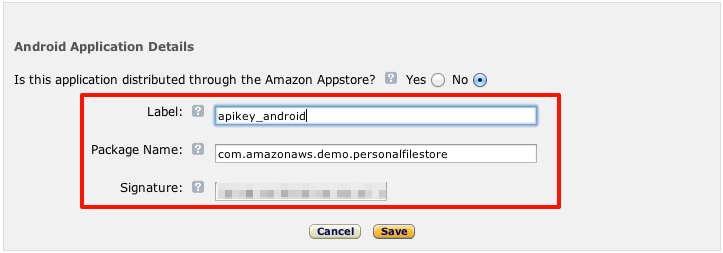

App ID. You'll use it in later steps. The other steps in this guide will be useful with your future Login with Amazon apps, but will not be necessary for this sample.
com.amazonaws.demo.personalfilestore.

This Amazon S3 Personal File Store sample is fully detailed in the web identity federation article. The sample demonstrates how to use AWS Security Token Service (STS) to give application users specific and constrained permissions to an Amazon S3 bucket. Each application user will get a "folder" of an Amazon S3 bucket as specified by the role policy. This README details all the steps necessary to get the sample running with Amazon Authentication. It assumes you've alredy completed the steps in the base README for setting up the application with Facebook:
App ID. You'll use it in later steps. The other steps in this guide will be useful with your future Login with Amazon apps, but will not be necessary for this sample.
com.amazonaws.demo.personalfilestore.


__BUCKET_NAME__ with the S3 bucket you created earlier:
{
"Version":"2012-10-17",
"Statement":[{
"Effect":"Allow",
"Action":["s3:ListBucket"],
"Resource":["arn:aws:s3:::__BUCKET_NAME__"],
"Condition":
{"StringLike":
{"s3:prefix":"${www.amazon.com:user_id}/*"}
}
},
{
"Effect":"Allow",
"Action":["s3:GetObject", "s3:PutObject", "s3:DeleteObject"],
"Resource":[
"arn:aws:s3:::__BUCKET_NAME__/${www.amazon.com:user_id}",
"arn:aws:s3:::__BUCKET_NAME__/${www.amazon.com:user_id}/*"
]
}
]
}


We've bundled the Login with Amazon SDK as part of the sample, but have disabled the authentication code from running.
Open Eclipse and modify Login.java
Change /* AMZN_LOGIN BEGIN to /* AMZN_LOGIN BEGIN */ to enable the Amazon login button.
res/values/strings.xml file in Eclipse.<string name="amzn_api_key">AMZN_API_KEY</string> <string name="amzn_role_arn">ROLE_ARN</string>
Run the sample on your Android device or emulator.